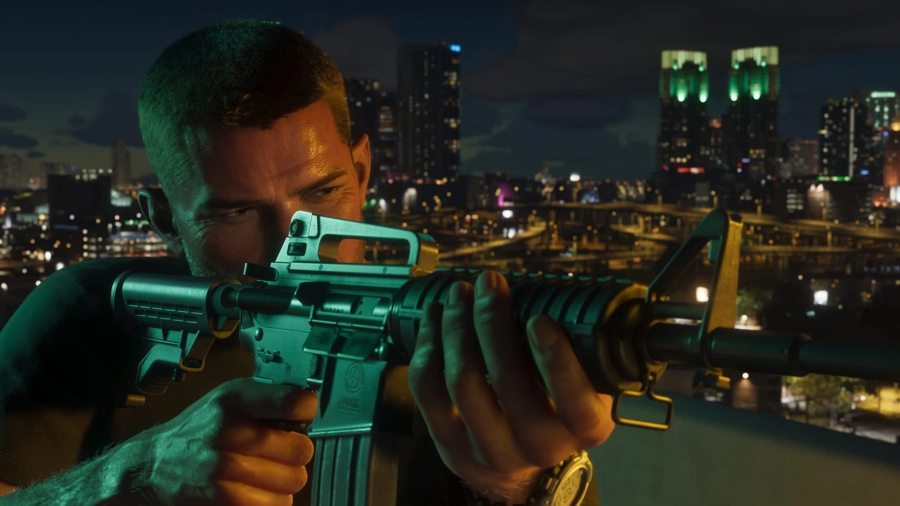

Mission 3 — Gear Up: buy your first longarm

Mission facts
- Mission: 3rd story mission in Chapter 1, after Gone Fishing (Mission 2), in the in-game Story Recap order. (Reported)
- You play: Jason.
- Where: the Ammu-Nation near Jason's house in Key Lento.
- Who: Andrew, the gun shop clerk — and three Kingfishers waiting outside.
- Reward: your first longarm (a shotgun or a tactical rifle), which you keep.
- What it teaches: buying weapons at Ammu-Nation, and fighting without drawing the police.
- Open at the same time: Gear Up unlocks together with Lab Fees, Just A Scratch and Unwanted Attention — you can play those four in any order. (Reported by VGC and PowerPyx)
Objectives, in order
- Collect the cash from the mailbox outside Jason's house
- Go to the Ammu-Nation in Key Lento
- Talk to Andrew and buy a longarm
- Leave the shop and survive the Kingfishers ambush
- Call Donnie to warn him
Walkthrough — step by step
1. Check the mailbox outside Jason's house. Before you drive anywhere, collect the cash waiting in the mailbox by Jason's front door. VGC says this is where all of your mission reward money is delivered, so get into the habit of checking it after every mission. One guide puts this payout at $20 from Dennis and $120 from Brian — that split comes from a single guide, so treat the amounts as unconfirmed.
2. Drive to the Ammu-Nation. The gun shop is near Jason's house in Key Lento. PowerPyx suggests taking the car parked outside the house. One guide names the storefront as Chuck's Tackle & Shot, with the Ammu-Nation counter inside — that name comes from a single guide, so the safe way to find it is to follow the mission marker.
3. Talk to Andrew and pick a longarm. Inside, speak to Andrew, the clerk, and open the weapon inventory. PowerPyx says the choice is a shotgun or a tactical rifle, and that at this point in the story you will probably only be able to afford the shotgun. VGC says the choice does not actually matter for the mission — pick whatever you like, or whatever you can afford, and you keep it either way.
4. Leave the shop — the Kingfishers are waiting. As soon as you step outside, three Kingfishers jump out of a truck and come at Jason. They are armed, but VGC's advice is clear: fight them with your fists. If you start shooting, the police will be drawn to the scene and you may have to lose them before you can finish the mission. A fist fight keeps the police away for much longer.
5. Call Donnie. Once the three are down, call Donnie and warn him that the Kingfishers are after them. That ends the playable part of the mission. PowerPyx notes that neither the gun you picked nor how the ambush ends changes anything later in the story.
6. What opens up next. After the call you are free: VGC says you can explore the open world, collect Brian's rent (Lab Fees), or head to Coastal Auto Care (Just A Scratch). All three of the other Key Lento jobs are already open, so take them in whatever order suits you.
Tips before you start
- Use your fists outside the shop. The Kingfishers have guns, but shooting back brings the police — and a wanted level is the last thing you need in a mission this short. (Reported by VGC)
- Do not stress over the gun choice. The shotgun is the realistic buy this early, and VGC says the choice makes no difference to the mission. Save the tactical rifle for later, when you have the cash. (Reported by VGC and PowerPyx)
- Check the mailbox after every mission. Mission reward money is delivered there, not handed to you on the spot — easy to miss if you never look. (Reported by VGC)
- Learn the controls first. The fist fight and the drive to the shop use the new layout — our GTA 6 controls guide covers what moved (sprint is now L3).
Fail conditions
No specific fail conditions for Gear Up have been confirmed in the walkthroughs checked so far. PowerPyx notes the ambush ends the mission either way and the outcome changes nothing later, but the usual mission-fail rules have not been spelled out for this mission — this section will be updated when a guide confirms them.
FAQ
What is Mission 3 in GTA 6?
Gear Up. Jason buys his first longarm at the Ammu-Nation in Key Lento from the clerk Andrew, then fights off three Kingfishers who ambush him outside the shop. (Reported by VGC and PowerPyx, checked 21 November 2026.)
Which gun should you buy first in Gear Up?
The shotgun, if it is all you can afford: PowerPyx says you will probably only be able to afford the shotgun this early in the story. VGC says the choice does not matter for the mission, and you keep whichever longarm you buy.
What happens after Gear Up in GTA 6?
The mission ends when Jason calls Donnie to warn him the Kingfishers are after them. Three more Chapter 1 missions are open at the same time — Lab Fees, Just A Scratch and Unwanted Attention — and you can play them in any order.
Previous: Mission 2 — Gone Fishing: Jason's first job. Next: Mission 4 guide follows here as soon as it is verified. Back to all mission guides. New to the game? Start with what to do first in GTA 6.